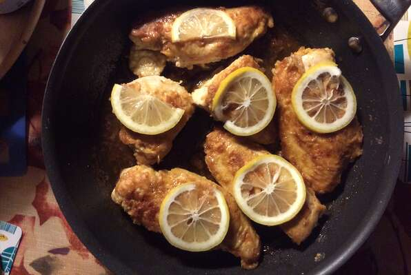

Slow Cooker Lemon Garlic Chicken II
Seasoned, browned chicken breasts slow cooked with lemon juice, garlic, and chicken bouillon. A wonderful 'fix and forget' recipe that is easy and pleases just about everyone. Great served with rice or pasta, or even alone.
- Prep: 15 mins
- Cook: 3hrs 15 mins
- Total: 3 hrs 30 mins
- Servings: 6
Ingredients
- 1 teaspoon dried oregano
- ½ teaspoon salt
- ¼ teaspoon ground black peppers
- 2 pounds skinless, boneless chicken breast halves
- 2 tablespoons butter
- ¼ cup water
- 3 tablespoons fresh lemon juice
- 2 cloves garlic, minced
- 1 teaspoon chicken bouillon granules
- 1 teaspoon chopped fresh parsley
Directions
- In a bowl, mix the oregano, salt, and pepper. Rub the mixture into chicken. Melt the butter in a skillet over medium heat. Brown chicken in butter for 3 to 5 minutes on each side. Place chicken in a slow cooker.
- In the same skillet, mix the water, lemon juice, garlic, and bouillon. Bring the mixture to boil. Pour over the chicken in the slow cooker.
- Cover, and cook on High for 3 hours, or Low for 6 hours. Add the parsley to the slow cooker 15 to 30 minutes before the end of the cook time.